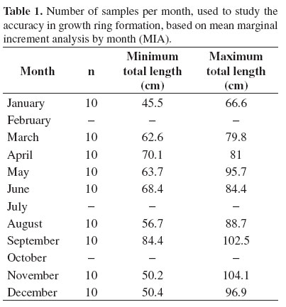
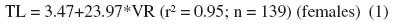
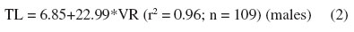
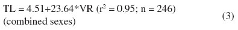
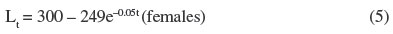

Services on Demand
Journal
Article
 English (pdf)
English (pdf)
 English (epdf)
English (epdf)
 Article in xml format
Article in xml format Article references
Article references
Indicators
Related links
 uBio
uBio Share
 Permalink
PermalinkBrazilian Journal of Biology
Print version ISSN 1519-6984
Braz. J. Biol. vol.71 no.3 São Carlos Aug. 2011
http://dx.doi.org/10.1590/S1519-69842011000400022
BIOLOGY
Age and growth of the Scalloped Hammerhead shark, Sphyrna lewini (Griffith and Smith, 1834), from the southern Brazilian coast
Idade e crescimento do tubarão-martelo-entalhado, Sphyrna lewini (Griffith and Smith, 1834), da costa sul do Brasil
Kotas JE.I,*; Mastrochirico, V.II,*; Petrere Junior, M.III,*
ICentro
de Pesquisa e Gestão de Recursos Pesqueiros do Litoral Sudeste e Sul –
CEPSUL – ICMBio, Av. Ministro Victor Konder, 374, CEP 88301-280,
Itajaí, SC, Brazil
IIDepartamento de Oceanografia,
Fundação Universidade Federal do Rio Grande – FURG, Av. Itália, Km 8,
CP 474, CEP 96201-900, Rio Grande, RS, Brazil
IIIDepartamento
de Ecologia , Instituto de Biociências, Universidade Estadual Paulista
– UNESP, Av. 24 A, 1515, CEP 13506-900, Rio Claro, SP, Brazil
ABSTRACT
Age and growth studies for the scalloped hammerhead shark, Sphyrna lewini (Griffith and Smith, 1834) caught along the southern Brazilian coast, were based on ring measurements of vertebrae sections of 115 males, 116 females and 14 unknown sexed sharks between 48 and 344 cm total length (TL). The von Bertalanffy growth models were best fit using back-calculated data. The growth parameters obtained for males, were L∞ = 266 cm; K = 0.05/year; L0 = 47 cm. For females, L∞ = 300 cm; K = 0.05/year; L0 = 51 cm. An adult female reached 217 cm TL and was 31.5 years old. On the other hand, an adult male was 29.5 years old and measured 234 cm TL. Longevity estimate for males and females was 55 years. Therefore, S. lewini is a long-lived fish. Ageing precision, based on the IAPE index, was 5.6%. Marginal Increment analysis based on MIR index from hammerheads smaller than 105 cm, compared with the percentual of opaque and hyaline bands found per month ageing whole vertebrae, showed an annual ring formation, i.e., in winter.
Keywords: elasmobranchs, fisheries biology, conservation.
RESUMO
O estudo da idade e do crescimento do tubarão-martelo-entalhado, Sphyrna lewini (Griffith and Smith, 1834), na costa sul do Brasil, baseou-se na leitura de anéis em seções de vértebras de 115 machos, 116 fêmeas e de 14 exemplares com sexo indeterminado, com comprimentos totais (CT) entre 48 e 344 cm. Modelos de crescimento de von Bertalanffy foram mais bem ajustados aos dados de idade e comprimento retrocalculados, considerando sexos em separado. Os parâmetros de crescimento obtidos para os machos foram L∞ = 266 cm; K = 0,05/ano; L0 = 47 cm. Para as fêmeas L∞ = 300 cm; K = 0,05/ano; L0 = 51 cm. Uma fêmea adulta atingiu um CT de 217 cm e uma idade de 31,5 anos. Por sua vez, um macho adulto tinha 29,5 anos e CT de 234 cm. A estimativa de longevidade para machos e fêmeas foi de 55 anos. O índice de erro percentual médio (IAPE), que avalia a precisão na leitura de idades, foi de 5,6%. A análise do incremento marginal baseada no índice MIR e aplicada em tubarões com CT < 105 cm, comparada com o percentual de bandas opacas e hialinas mensais, obtido através de leituras de vértebras inteiras, indicou um padrão anual na formação dos anéis, ou seja, anéis de inverno.
Palavras-chave: elasmobrânquios, biologia pesqueira, conservação.
1. Introduction
Age and growth studies of Sphyrna lewini have been carried out at a regional level throughout the world by several authors (Chen et al., 1990; Tolentino and Mendoza, 2001; Piercy et al., 2007). Some authors found an annual ring, while others concluded that ring formation was semi-annual, implying different growth rates between geographical areas. Moreover, in most of the studies the accuracy of the ring formation has to be validated, with new studies.
In the present paper, the age and growth of the scalloped hammerhead shark, Sphyrna lewini, caught along the southern Brazilian coast were studied. The knowledge of the growth pattern of this hammerhead species is a cornerstone parameter to understand its resilience to high levels of exploitation, as well for the establishment of conservation strategies to avoid its extinction.
2. Materials and Methods
Scalloped hammerheads, Sphyrna lewini, were sampled (n = 245) from landings between 1995 and 2002 (Kotas, 2004) in Ubatuba (São Paulo state) and Itajaí (Santa Catarina state). Fishing in these regions was conducted with surface and bottom gillnetters, surface longliners and bottom trawlers (pair and double-rig). Shark total length (TL) and the distance between the first dorsal insertion and the precaudal pit (DC) were measured. This later measurement was used, during harbour sampling, to transform shark carcasses in total length (TL), using the following morphometric relationship: TL = 9.125 + 2.7 (DC) (Kotas, 2004).
To determine age, three to five vertebrae, located just below or ahead of the first dorsal fin were extracted from each scalloped hammerhead and kept in ethanol (70%). Afterwards, they were chemically hyper-oxidated following a decalcification (HDQ) (Lozáno, 1999), and embedded in polyester resin to allow its sectioning. For each vertebrate, three longitudinal fine sections, passing through the focus and measuring 0.7 mm thick, were obtained using a precision metalographic ISOMET low-speed saw. Each section was then fixed with special glue (Araldite Hobby, 10´) on a microscope slide for age reading.
Vertebrae slides were laid on a Petry plate and immersed in distilled water. Centrum rings were counted and measured by direct light with the aid of an Images Analysis System, which uses the software Image Pro Plus, 3.0 version for Windows. Vertebrae from 245 scalloped hammerhead sharks were aged, ranging between 48 and 344 cm total length, 115 were male and 116 were female and 14 were of unknown sex.
The centrum presented a pattern of wide opaque bands (more calcified), followed by narrow translucent bands (less calcified). The hyaline zone was considered as an annulus ("ring"). Ageing procedure counted the number of annuli and measured the centrum radius and the distance between the vertebrae focus and each ring. Two independent readers aged each sample at the same time, and this procedure was performed twice. If there was not a consensus between readers, a third reading was performed. If again there was no agreement between readers, the sample was discarded. From the total sample (n = 245), 85 were discarded (35%).
To compare the average deviation of readings from means of all readings for each vertebral section, the index of average percentual error (IAPE) was calculated (Beamish and Fournier, 1981; Campana, 2001). A mean IAPE index was calculated for all vertebrae which presented agreement between readers (n = 160). To ensure high precision in the ageing procedure, vertebrae rings were counted without knowing the sex or length of the individuals.
The accuracy on vertebrae ring formation was tested using the relative marginal increment analysis (MIA) proposed by Branstetter and Musick (1994), and Natanson et al. (1995). Vertebrae used for the marginal increment analysis (MIA) were from sharks with total length (TL), between 45 and 105 cm (n = 90). They were whole vertebrae, without cutting and embedding in acrylic resin. They were selected for this analysis, due to their best view on the stereoscope (Table 1). Mean MIR was plotted against month to determine trends in band formation. A Kruskal-Wallis one-way test by ranks was used to test for differences in MIR by month (Sulikowski et al., 2003, 2005). The results of MIR analysis in this case cannot be extrapolated to larger size classes (TL ≥ 105 cm), because the reproductive cycle in adult specimens may change the ageing dynamics and the periodicity of ring formation.

Regression analysis was used to verify if there was a linear relation between total length and vertebrae radius for combined and separated sexes respectively. In the positive case, it was possible to back-calculate total lengths from "corpus calcareum" ring measurements, for separated sexes. Back-calculated total lengths were estimated from 893 individual measurements of the distance between focus and each growth ring on 160 vertebrae (Campana, 1990). The back-calculated total lengths from sharks 45 cm < TL < 89 cm were used in the analysis, i.e., 401 and 492 individual total lengths for males and females respectively.
von Bertalanffy growth models were fitted to observed and back-calculated lengths versus age's data, for each sex and considering sharks between 45 and 344 cm. The von Bertalanffy growth function used considered the size at birth (L0), a version most commonly applied for elasmobranchs age and growth studies (Cailliet et al., 2006).
The non-linear estimates of the growth parameters were based on Gauss-Newton method, which uses Marquardt (1963) algorithm. The criteria used to select the best fit were based on the following conditions: 1) higher coefficient of determination (r2); 2) lower mean square error (MSE); and 3) growth parameters estimates with the lowest standard asymptotic error (ASE).
In developing theoretical growth models, an arbitrary birth date of 1 January, the approximate mid-point of the time-period when neonates were present in the field were adopted (Kotas, 2004). It was also considered that the birth mark is the band associated with a pronounced change in angle in the intermedialia, and that the translucent bands that represent winter growth form approximately one year later. Therefore, the first annulus is formed in January, immediately after birth, and the age of first annulus formation was at 0 year, the second at 0.5 year, the third at 1,5 year, the fourth at 2,5 year, and so on.
Longevity estimates (t) were based on the Ricker (1979) empirical equation, which considered the time it takes to reach the fraction x of L∞. In this case it was considered x = 0.95. Therefore, the equation used was the following: t0.95 = 2.77/k, where k = von Bertalanffy growth rate.
3. Results
The index of average percentual error (IAPE) was 5.6%. The ageing precision was positively related with total length and age, being higher above 100 cm total length (TL) and 20 growth rings.
Marginal increment analysis (MIA) showed a decline in the MIR values on summer (January-March) and winter (August-September), which suggests that two rings are formed each year (Figure 1). Marginal increments were significantly different among months (Kruskal-Wallis c2 = 18.6; p = 0.017). However, in a previous study carried out by Kotas (2004) who compared the percentual of opaque and hyaline bands found per month, ageing the whole vertebrae of Sphyrna lewini (n = 361), the highest frequency of hyaline bands was observed in winter (Table 2). Also the same author applying marginal increment analysis (MIA) to 260 vertebrae samples, found lower values in winter. Therefore, comparing previous and present results, it was accepted the formation of only one ring each year, during wintertime.
Regression analysis showed a linear relation between total length (cm) and vertebrae radius (cm), for combined and separated sexes. The linear relationships were expressed as regression equations in the following way (Equations 1-3):



where, TL = total length (cm); VR = vertebrae radius (cm).
The above equations, for separated sexes, were used to back-calculate the total lengths at time of annulus formation. Lee's phenomenon was observed in S. lewini, i.e., the difference between back-calculated length and the true length at earlier annuli was greater at younger ages. In this case, the back-calculated lengths for the oldest fish in their earlier annuli were systematically smaller than the younger fishes at the same age (Smith, 1983).
Back-calculated total lengths indicated that, the oldest male shark had 29.5 years and 234 cm, while the oldest female was 31.5 years old and measured 217 cm. Male and female pups had a mean weighted TL of 50.3 and 50.1 cm respectively.
Comparing the von Bertalanffy growth models fitted to observed and back-calculated lengths at time of annulus formation, for separated sexes (Table 3, Figures 2 and 3), it was concluded that the back-calculated data presented the best fit, due their higher coefficients of determination values (r2), lower standard asymptotic errors (ASE), and residual mean squares (MSE) than observed data. Therefore, the von Bertalanffy growth curves for males and females were expressed in the following way (Equations 4 and 5):

where, Lt = total length at age "t" (cm); L∞ = 266 = mean asymptotic total length (cm); k = 0.05 = growth rate coefficient (year–1); L0 = total length at birth (cm) = 47;

where, Lt = total length at age "t" (cm); L∞ = 300 = mean asymptotic total length (cm); k = 0.05 = growth rate coefficient (year–1); L0 = total length at birth (cm) = 51;
All the above growth parameters (L∞, k and L0) were obtained during the fitting process by iteration.
The von Bertalanffy models based on back-calculated data, showed that females reached bigger mean asymptotic length than males (L∞females = 300 cm; L∞males = 266 cm). On the other hand, both sexes had similar growth rates (kfemales = kmales 0.05 year–1). Comparing the von Bertalanffy growth models between sexes it was observed that females reached bigger sizes than males at the same age. Females reached an approximate total length of 200 cm at 18.5 years (20 annulus), and males at 24.5 years (26 annulus).
Using the Ricker (1979) equation, longevity estimates for males and females were 55 years. Therefore Sphyrna lewini is a longevous species.
4. Discussion
In the present paper, for the pups and juveniles of S. lewini, it was possible to validate the formation of one ring per year, which happened during winter. A similar pattern was found by Piercy et al. (2007), who ran a MIA for all age classes from the north-west Atlantic Ocean and the Gulf of Mexico. Branstetter (1987), also conducting longitudinal cuts on vertebrae, found annual winter rings in the same area as well. Schwartz (1983), with whole vertebrae in the eastern USA coast and Andrade and Mazzoleni (1999) with vertebrae cuts from southern Brazilian scalloped hammerheads also obtained evidence of annual ring formation. The birth ring appears in pups during the spring-summer season, a reproductive period previously described by other authors (Vooren and Klippel, 2005; Kotas, 2004). Birth rings are formed as a response of the stress caused by changing placental viviparity to free-living lifestyle. The winter rings could be formed due to the lower growth rates caused by lower temperatures in colder months which reduce the overall metabolism of the fish (Klimley, 1987; Yudin and Cailliet, 1990).
The Marginal increment analysis (MIA) was performed only on the centrum of whole vertebrae from immature scalloped hammerheads with TL < 105 cm. Mature S. lewini life stages have to be assessed with more MIR analysis forthcoming.
The von Bertalanffy model, with its concave shape was a useful tool to represent the initial growth phase of pups and juveniles until the age of 5.5 years (seven annulus) for males and 4.5 (six annulus) for females, when they reached an approximate total length of 100 cm which could be considered a safe size to avoid several predators (Branstetter, 1990). With respect the reproductive cycle, Vooren and Klippel (2005) presented the first maturation sizes for S. lewini in southern Brazil as 192 cm and 204 cm TL for males and females respectively.
The largest scalloped hammerhead caught in southern Brazil by a longliner was a female with 344 cm TL (Kotas, 2004), and the value found for the asymptotic length in the present paper was 300 cm TL. On the other hand, the largest male caught by a longliner had 331 cm (Kotas, 2004), and the value found for L∞ = 266 cm TL. Vooren and Klippel, (2005) registered maximum size for S. lewini in southern Brazil of 382 cm TL, without information about its sex. Gilbert (1967) speculated that the maximum length for this species would be probably between 370 and 400 cm TL.
Based on the Ricker (1979) equation, longevity estimate for males and females was 55 years respectively. Therefore Sphyrna lewini is a longevous species. Conversely, the present results should be considered with caution, because the von Bertalanffy equation usually overestimates the asymptotic mean size, and underestimates the growth coefficients (Carlson and Baremore, 2005).
The growth coefficients (k), estimated by fitting the von Bertalanffy growth model to the back-calculated length-at-age data of S. lewini caught off southern Brazil, was 0.05 per year for males and females. In this case, based on MIA for immature male and females, and the percentual of opaque and hyaline bands found per month by Kotas (2004), one ring is formed per year. Chen et al. (1990), in Northeastern Taiwan waters, estimated k = 0.22 per year for males and k = 0.25 per year for females. The estimates were based on MIA for mature males and immature/mature females and observed that two rings were formed per year. Tolentino et al. (2008) in the eastern Pacific Ocean estimated k = 0.12 per year for males and k = 0.1 per year for females. In this case, the opaque band formation frequency analysis indicated that two opaque bands formed each year. Conversely, Piercy et al. (2007), who did run a MIA for all age classes in the North Atlantic ocean, concluded that one ring was formed yearly, and found k = 0.09 and 0.13 year–1, for males and females respectively. Also Piercy et al. (2010) using marginal increment analysis and a concurrent bomb radiocarbon validation study found annual band pair deposition for the great hammerhead, Sphyrna mokarran. A comparison of the present study with the growth curves obtained by different authors (Figure 4), indicated that S. lewini from the southern Brazilian coast grow slower and are more longevous than in the other regions studied until now.
The von Bertalanffy growth model presented a good fit to the back-calculated data (high correlation, low MSE and ASE) and satisfactorily represented the scalloped hammerhead growth. The growth parameters showed that this shark is a slow growth and long-lived species, which has consequently a low resilience to overfishing. Estimates of the intrinsic rate of increase for Sphyrna lewini (r ~ 0.08 – 0.105 year–1) are low and fall under the low productivity category (r < 0.14) (Musick et al., 2000; Consideration of proposals for Amendment of Appendices I and II, 2010). Therefore, Sphyrna lewini is a low-productivity species, and is likely to become threatened with extinction unless international fin trade and bycatch regulations, such as monitoring and closure areas, are established.
Acknowledgements – The authors would like to thank the São Paulo State Research Aid Foundation (FAPESP) (process nº 01/13299-7) and the Brazilian National Research and Technological Development Council (CNPq) (PIBIC process nº 105214/2005-1) for the financial and institutional help.
References
ANDRADE, HA. and MAZZOLENI, RC., 1999. Idade e crescimento do tubarão-martelo (Sphyrnalewini, Griffith & Smith, 1834) no sudoeste do Atlântico Sul. Itajaí. Relatório técnico ProBic. [ Links ]
BEAMISH, RJ. and FOURNIER, DA., 1981. A method for comparing the precision of a set of age determinations. Canadian Journal of Fisheries and Aquatic Sciences, vol. 38, p. 982-983. http://dx.doi.org/10.1139/f81-132 [ Links ]
BRANSTETTER, S, 1987. Age, growth and reproductive biology of the silky shark, Carcharhinusfalciformis, and the scalloped hammerhead, Sphyrnalewini, from the northwestern Gulf of Mexico. Environmental BiologyofFishes, vol. 19, no. 3, p. 161-173. [ Links ]
-, 1990. Early life-history implications of selected carcharhinoid and lamnoid shark of the northwest Atlantic. In Proceedings of the international workshop on age determination of oceanic pelagic fishes: Tunas, billfishes, and sharks. Miami: NOAA. p. 17-28. NOAA Technical Report NMFS, vol. 9. [ Links ]
BRANSTETTER, S. and MUSICK, JA., 1994. Age and growth estimates for the sand tiger in the Northwestern Atlantic Ocean. Transactions of the American Fisheries Society, vol. 123, p. 242- 254. http://dx.doi.org/10.1577/1548-8659 [ Links ]
CAILLIET, GM., SMITH, WD., MOLLET, HF. and GOLDMAN, KJ., 2006. Age and growth studies of chondrichthyan fishes: the need for consistency in terminology, verification, validation, and growth function fitting. Environmental Biology of Fishes, vol. 77, p. 211-228. http://dx.doi.org/10.1007/s10641-006-9105-5 [ Links ]
CAMPANA, SE., 1990. How reliable are growth back-calculations based on otoliths? Canadian Journal of Fisheries and Aquatic Sciences , vol. 47, p. 2219-2227. http://dx.doi.org/10.1139/f90-246 [ Links ]
-, 2001.Accuracy, precision, and quality control in age determination, including a review of the use and abuse of age validation methods. Journal of Fish Biology, vol. 17, p. 197-242. [ Links ]
CARLSON, JK. and BAREMORE, IE., 2005. Growth dynamics of the spinner shark (Carcharhinusbrevipinna) off the United States southeast and Gulf of Mexico coasts: a comparison of methods. Fishery Bulletin, vol. 103, p. 280-291. [ Links ]
CHEN, CT., LEU, TC. and LOU , N.CH., 1990. Age and growth of the scalloped hammerhead, Sphyrnalewini, in northeastern Taiwan waters. Pacific Science, vol. 44, p. 156-170. [ Links ]
Consideration of proposals for Amendment of Appendices I and II, 2010. In Conference of the Parties, 2010. Doha (Qatar): CITES. 31 p. [ Links ]
GILBERT, P., 1967. A review of the hammerhead sharks (Family Sphyrnidae). Proceedings of the US National Museum, vol. 119, p.1-88. [ Links ]
KLIMLEY, AP., 1987. The determinants of sexual segregation in the scalloped hammerhead shark, Sphyrnalewini. Environmental Biology of Fishes, vol. 18, p. 27-40. http://dx.doi.org/10.1007/ BF00002325 [ Links ]
KOTAS, JE., 2004. Dinâmica de populações e pesca do tubarão-martelo Sphyrnalewini (Griffith & Smith, 1834), capturado no mar territorial e zona econômica exclusiva do sudeste-sul do Brasil. São Carlos: Universidade de São Paulo. 377 p. Tese de Doutorado em Ciências da Engenharia Ambiental. [ Links ]
LOZÁNO, AP., 1999. Idade e crescimento da PiracatingaCalophysusmacropterus, Lichtenstein, 1819 (Pisces, Pimelodidae), na Amazônia Central. Manaus:Universidade Federal do Amazonas. 89 p. Dissertação de Mestrado. [ Links ]
MARQUARDT, DW., 1963. Analgorithmforleast-squaresestimation of nonlinearparameters. Journal of the Society for Industrial and Applied Mathematics , vol. 11, p. 431-441. http://dx.doi.org/10.1137/0111030 [ Links ]
MUSICK, JA., BERKELEY, SA., CAILLIET, GM., CAMHI, M., HUNTSMAN, G., NAMMACK, M. and WARREN, ML., 2000. Protection of marine fish stocks at risk of extinction. Fisheries, vol. 25, no. 3, p. 6-8. [ Links ]
NATANSON, LJ., CASEY, JG. and KOHLER, NE., 1995. Age and growth estimates for the dusky shark, Carcharhinusobscurus, in the western North Atlantic Ocean. Fishery Bulletin, vol. 193, p. 116-126. [ Links ]
PIERCY, AN., CARLSON, JK.,SULIKOWSKI, JA., and BURGESS, G., 2007. Age and growth of the scalloped hammerhead shark, Sphyrnalewini, in the north-west Atlantic Ocean and Gulf of Mexico.Marine and Freshwater Research, vol. 58, p. 34-40. http://dx.doi.org/10.1071/MF05195 [ Links ]
PIERCY, AN., CARLSON, JK. and PASSEROTTI, MS., 2010. Age and growth of the great hammerhead shark, Sphyrnamokarran, in the north-western Atlantic Ocean and Gulf of Mexico. Marine and Freshwater Research, vol. 61, p. 992-998. http://dx.doi.org/10.1071/MF09227 [ Links ]
RICKER, WE., 1979. Growth rates and models. In HOAR, WS., RANDALL, DJ. and BRETT, JR. (Eds). Fish Physiology. New York: Academic Press. p 677-743. Bioenergetics and Growth, vol. 8. [ Links ]
SCHWARTZ, FJ., 1983. Shark ageing methods and age estimation of scalloped hammerhead, Sphyrnalewini, and dusky, Carcharhinusobscurus, sharks based on vertebral ring counts. In Proceedings of the international workshop on age determination of oceanic pelagic fishes: Tunas, billfishes, and sharks. Miami: NOAA. p. 167-174. NOAA Technical Report NMFS, vol.8. [ Links ]
SMITH, CI., 1983. Summary of round table discussions of back calculation. In Proceedings of the international workshop on age determination of oceanic pelagic fishes: Tunas, billfishes, and sharks. Miami: NOAA. p. 45-47. NOAA Technical Report NMFS, vol. 8. [ Links ]
SULIKOWSKI, JA., KNEEBONE, J., ELZEY, S., JUREK, J., DANLEY, P., HOWELL, WH. and TSANG, PCW., 2005. Age and growth estimates of the thorny skate (Amblyrajaradiata) in the western Gulf of Maine. Fishery Bulletin, vol. 103, p. 161-168. [ Links ]
SULIKOWSKI, JA.,MORIN, MD., SUK, SH. and HOWELL, WH., 2003. Age and growth of the winter skate, Leucorajaocellata, in the Gulf of Maine. Fishery Bulletin,vol. 101, p. 405-413. [ Links ]
TOLENTINO,V. and MENDOZA, RC., 2001. Age and growth for the scalloped hammerhead shark, Sphyrnalewini (Griffith & Smith, 1834) along the Central Pacific Coast of Mexico. Ciencias Marinas, vol. 27, p. 501-520. [ Links ]
TOLENTINO, VA., CABELLO, MG., LINARES, FA. and MENDOZA, CR., 2008. Age and Growth of the Scalloped hammerhead shark, Sphyrnalewini (Griffith & Smith, 1834) from the southern coast of Sinaloa, México. Hidrobiológica, vol. 18, p. 31-40. [ Links ]
VOOREN, CM. and KLIPPEL, S., 2005. Ações para a conservação de tubarões e raias no sul do Brasil. Igaré: Porto Alegre. [ Links ]
YUDIN, KG. and CAILLIET, GM., 1990. Age and growth of the gray smoothhound, Musteluscalifornicus, and the brown smoothhound, M. henlei, sharks from central California. Copeia, vol. 1, p. 191-204. [ Links ]
Received September 2, 2010
Accepted November 19, 2010
Distributed August 31, 2011
* e-mail: jekotas@gmail.com; vito.oceano@gmail.com; mpetrere@rc.unesp.br

{kind=link}
{kind=link}
{kind=link}
{kind=link}
{kind=link}
{kind=link}